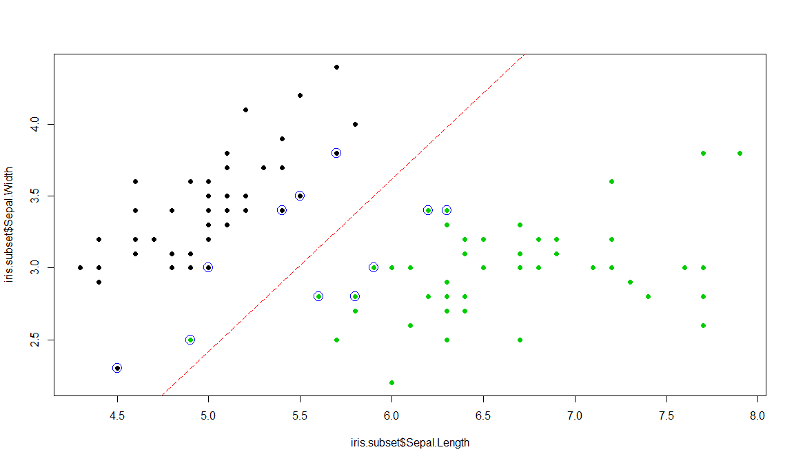
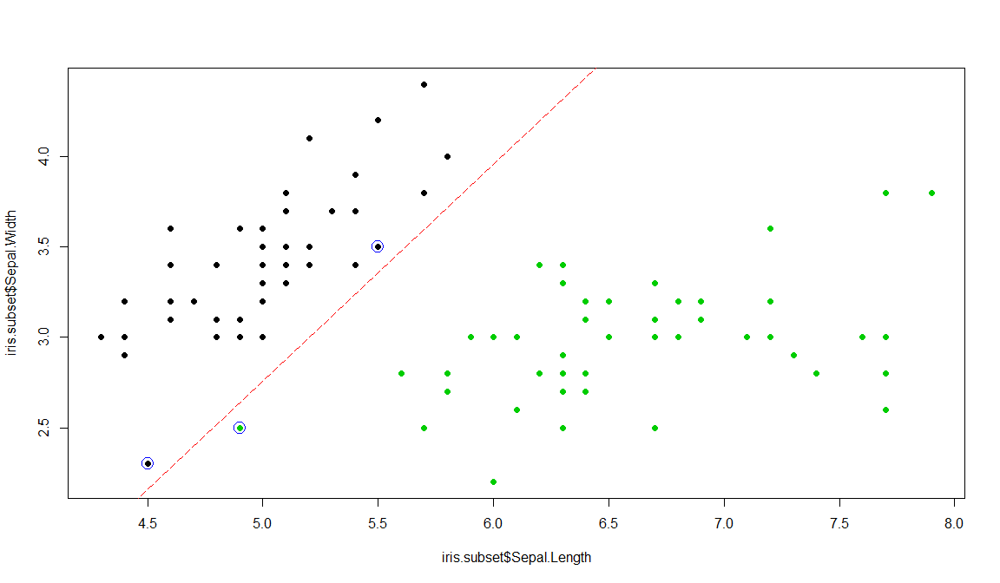
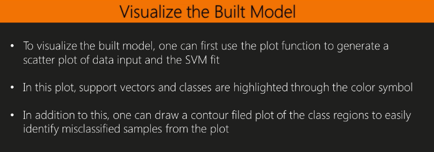
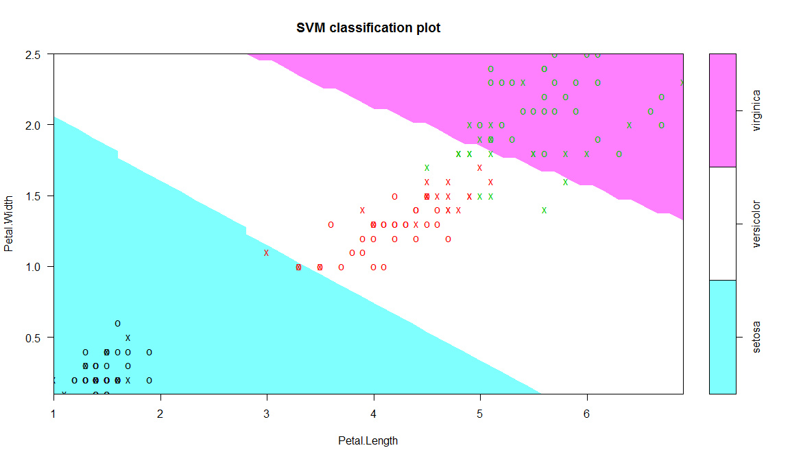
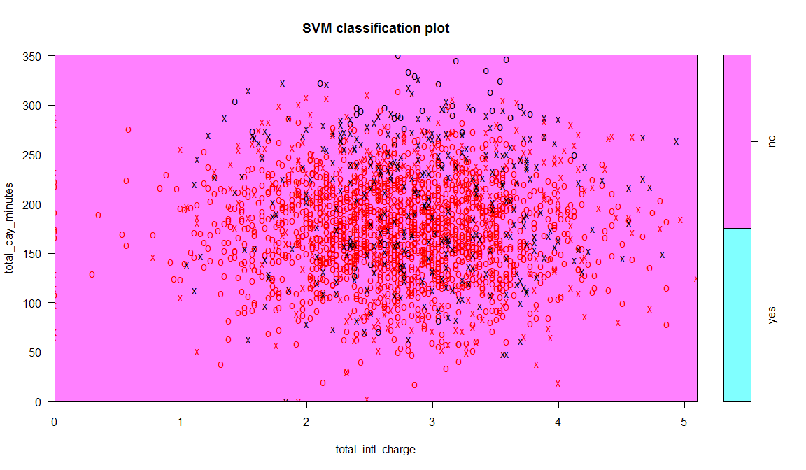
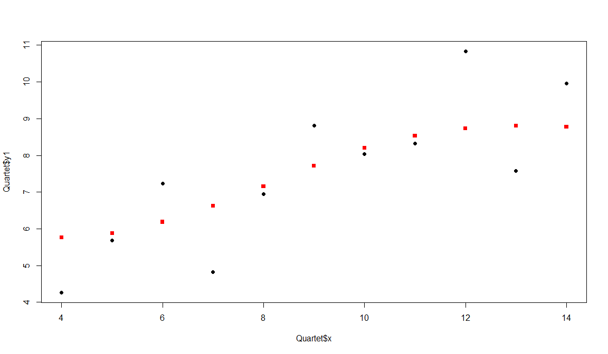

SVM and Neural Network
Jose Parreno Garcia
February 2018
library(knitr)We will look at:
- SVM - Support Vector Machine
- Neural Network
1 SVM

1.1 Preparing the data
library(C50)
data(churn)
str(churnTrain)## 'data.frame': 3333 obs. of 20 variables:
## $ state : Factor w/ 51 levels "AK","AL","AR",..: 17 36 32 36 37 2 20 25 19 50 ...
## $ account_length : int 128 107 137 84 75 118 121 147 117 141 ...
## $ area_code : Factor w/ 3 levels "area_code_408",..: 2 2 2 1 2 3 3 2 1 2 ...
## $ international_plan : Factor w/ 2 levels "no","yes": 1 1 1 2 2 2 1 2 1 2 ...
## $ voice_mail_plan : Factor w/ 2 levels "no","yes": 2 2 1 1 1 1 2 1 1 2 ...
## $ number_vmail_messages : int 25 26 0 0 0 0 24 0 0 37 ...
## $ total_day_minutes : num 265 162 243 299 167 ...
## $ total_day_calls : int 110 123 114 71 113 98 88 79 97 84 ...
## $ total_day_charge : num 45.1 27.5 41.4 50.9 28.3 ...
## $ total_eve_minutes : num 197.4 195.5 121.2 61.9 148.3 ...
## $ total_eve_calls : int 99 103 110 88 122 101 108 94 80 111 ...
## $ total_eve_charge : num 16.78 16.62 10.3 5.26 12.61 ...
## $ total_night_minutes : num 245 254 163 197 187 ...
## $ total_night_calls : int 91 103 104 89 121 118 118 96 90 97 ...
## $ total_night_charge : num 11.01 11.45 7.32 8.86 8.41 ...
## $ total_intl_minutes : num 10 13.7 12.2 6.6 10.1 6.3 7.5 7.1 8.7 11.2 ...
## $ total_intl_calls : int 3 3 5 7 3 6 7 6 4 5 ...
## $ total_intl_charge : num 2.7 3.7 3.29 1.78 2.73 1.7 2.03 1.92 2.35 3.02 ...
## $ number_customer_service_calls: int 1 1 0 2 3 0 3 0 1 0 ...
## $ churn : Factor w/ 2 levels "yes","no": 2 2 2 2 2 2 2 2 2 2 ...# Remove certain variables that we are not going to use
churnTrain = churnTrain[,! names(churnTrain) %in% c("state"
, "area_code"
, "account_length") ]
set.seed(2)
ind = sample(2, nrow(churnTrain), replace = TRUE, prob=c(0.7,0.3))
trainset = churnTrain[ind == 1,]
testset = churnTrain[ind == 2,]
dim(trainset)## [1] 2315 17dim(testset)## [1] 1018 17split.data = function(data, p = 0.7, s = 666){
set.seed(s)
index = sample(1:dim(data)[1])
train = data[index[1:floor(dim(data)[1] * p)], ]
test = data[index[((ceiling(dim(data)[1] * p)) + 1):dim(data)[1]], ]
return(list(train = train, test = test))
}1.2 Implementing simple SVM
library(e1071)
model = svm(churn~., data = trainset, kernel="radial", cost=1,
gamma = 1/ncol(trainset))
summary(model)##
## Call:
## svm(formula = churn ~ ., data = trainset, kernel = "radial", cost = 1, gamma = 1/ncol(trainset))
##
##
## Parameters:
## SVM-Type: C-classification
## SVM-Kernel: radial
## cost: 1
## gamma: 0.05882352941
##
## Number of Support Vectors: 691
##
## ( 394 297 )
##
##
## Number of Classes: 2
##
## Levels:
## yes no1.3 Choosing the Cost of an SVM
iris.subset = subset(iris, select=c("Sepal.Length", "Sepal.Width", "Species"),
Species %in% c("setosa","virginica"))
# FIRST MODEL
plot(x=iris.subset$Sepal.Length,y=iris.subset$Sepal.Width,
col=iris.subset$Species, pch=19)
svm.model = svm(Species ~ ., data=iris.subset, kernel='linear',
cost=1, scale=FALSE)
points(iris.subset[svm.model$index,c(1,2)],col="blue",cex=2)
w = t(svm.model$coefs) %*% svm.model$SV
b = -svm.model$rho
abline(a=-b/w[1,2], b=-w[1,1]/w[1,2], col="red", lty=5)
# SECOND MODEL
plot(x=iris.subset$Sepal.Length,y=iris.subset$Sepal.Width,
col=iris.subset$Species, pch=19)
svm.model = svm(Species ~ ., data=iris.subset, type='C-classification',
kernel='linear', cost=10000, scale=FALSE)
points(iris.subset[svm.model$index,c(1,2)],col="blue",cex=2)
w = t(svm.model$coefs) %*% svm.model$SV
b = -svm.model$rho
abline(a=-b/w[1,2], b=-w[1,1]/w[1,2], col="red", lty=5)
1.4 Visualizing an SVM

data(iris)
model.iris = svm(Species~., iris)
plot(model.iris, iris, Petal.Width ~ Petal.Length, slice =
list(Sepal.Width = 3, Sepal.Length = 4))
plot(model, trainset, total_day_minutes ~ total_intl_charge)
1.5 Predicting labels based on a model trained by an SVM
svm.pred = predict(model, testset[, !names(testset) %in% c("churn")])
svm.table=table(svm.pred, testset$churn)
svm.table##
## svm.pred yes no
## yes 70 12
## no 71 865classAgreement(svm.table)## $diag
## [1] 0.9184675835
##
## $kappa
## [1] 0.5855902693
##
## $rand
## [1] 0.8500829706
##
## $crand
## [1] 0.5260472453library(caret)
confusionMatrix(svm.table)## Confusion Matrix and Statistics
##
##
## svm.pred yes no
## yes 70 12
## no 71 865
##
## Accuracy : 0.9184676
## 95% CI : (0.8999294, 0.9345392)
## No Information Rate : 0.8614931
## P-Value [Acc > NIR] : 0.0000000125077120
##
## Kappa : 0.5855903
## Mcnemar's Test P-Value : 0.0000000001936083
##
## Sensitivity : 0.49645390
## Specificity : 0.98631699
## Pos Pred Value : 0.85365854
## Neg Pred Value : 0.92414530
## Prevalence : 0.13850688
## Detection Rate : 0.06876228
## Detection Prevalence : 0.08055010
## Balanced Accuracy : 0.74138545
##
## 'Positive' Class : yes
## library(car)
data(Quartet)
model.regression = svm(Quartet$y1~Quartet$x,type="eps-regression")
predict.y = predict(model.regression, Quartet$x)
predict.y## 1 2 3 4 5 6 7 8 9 10 11
## 8.196894242 7.152946353 8.807471490 7.713098715 8.533577689 8.774046035 6.186349064 5.763688864 8.726924725 6.621373417 5.882946381plot(Quartet$x, Quartet$y1, pch=19)
points(Quartet$x, predict.y, pch=15, col="red")
1.6 Tuning an SVM
tuned = tune.svm(churn~., data = trainset, gamma = 10^(-6:-1),cost = 10^(1:2))
summary(tuned)##
## Parameter tuning of 'svm':
##
## - sampling method: 10-fold cross validation
##
## - best parameters:
## gamma cost
## 0.01 100
##
## - best performance: 0.08080310494
##
## - Detailed performance results:
## gamma cost error dispersion
## 1 0.000001 10 0.14774779818 0.02237866720
## 2 0.000010 10 0.14774779818 0.02237866720
## 3 0.000100 10 0.14774779818 0.02237866720
## 4 0.001000 10 0.14774779818 0.02237866720
## 5 0.010000 10 0.09202492909 0.01981595086
## 6 0.100000 10 0.08900582176 0.02392487351
## 7 0.000001 100 0.14774779818 0.02237866720
## 8 0.000010 100 0.14774779818 0.02237866720
## 9 0.000100 100 0.14774779818 0.02237866720
## 10 0.001000 100 0.11621697268 0.02317552818
## 11 0.010000 100 0.08080310494 0.02367425659
## 12 0.100000 100 0.13048775937 0.02155658628model.tuned = svm(churn~., data = trainset, gamma = tuned$best.parameters$gamma,
cost = tuned$best.parameters$cost)
summary(model.tuned)##
## Call:
## svm(formula = churn ~ ., data = trainset, gamma = tuned$best.parameters$gamma, cost = tuned$best.parameters$cost)
##
##
## Parameters:
## SVM-Type: C-classification
## SVM-Kernel: radial
## cost: 100
## gamma: 0.01
##
## Number of Support Vectors: 547
##
## ( 304 243 )
##
##
## Number of Classes: 2
##
## Levels:
## yes nosvm.tuned.pred = predict(model.tuned, testset[, !names(testset) %in% c("churn")])
svm.tuned.table=table(svm.tuned.pred, testset$churn)
svm.tuned.table##
## svm.tuned.pred yes no
## yes 95 24
## no 46 853classAgreement(svm.tuned.table)## $diag
## [1] 0.931237721
##
## $kappa
## [1] 0.6916779882
##
## $rand
## [1] 0.8718060168
##
## $crand
## [1] 0.6303614637confusionMatrix(svm.tuned.table)## Confusion Matrix and Statistics
##
##
## svm.tuned.pred yes no
## yes 95 24
## no 46 853
##
## Accuracy : 0.9312377
## 95% CI : (0.9139185, 0.9460076)
## No Information Rate : 0.8614931
## P-Value [Acc > NIR] : 0.000000000001560231
##
## Kappa : 0.691678
## Mcnemar's Test P-Value : 0.0120738
##
## Sensitivity : 0.67375887
## Specificity : 0.97263398
## Pos Pred Value : 0.79831933
## Neg Pred Value : 0.94883204
## Prevalence : 0.13850688
## Detection Rate : 0.09332024
## Detection Prevalence : 0.11689587
## Balanced Accuracy : 0.82319642
##
## 'Positive' Class : yes
## 2 Neural Network
data(iris)
ind = sample(2, nrow(iris), replace = TRUE, prob=c(0.7, 0.3))
trainset = iris[ind == 1,]
testset = iris[ind == 2,]
library(neuralnet)
trainset$setosa = trainset$Species == "setosa"
trainset$virginica = trainset$Species == "virginica"
trainset$versicolor = trainset$Species == "versicolor"
network = neuralnet(versicolor + virginica + setosa~ Sepal.Length +
Sepal.Width + Petal.Length + Petal.Width, trainset,hidden=3)
head(network$result.matrix)## 1
## error 1.703821468022
## reached.threshold 0.008940656121
## steps 7327.000000000000
## Intercept.to.1layhid1 -13.422827460355
## Sepal.Length.to.1layhid1 -1.961731000959
## Sepal.Width.to.1layhid1 -2.431731244103head(network$generalized.weights[[1]])## [,1] [,2] [,3] [,4] [,5] [,6] [,7] [,8] [,9] [,10] [,11] [,12]
## 2 -2.821111487 -4.380038135 6.410699002 11.048242635 -3.302207559 -5.126984561 7.503942612 12.932346172 1.8944961142 2.941381498 -4.305056502 -7.419363823
## 5 1.374146396 2.133490145 -3.122612833 -5.381532321 1.256408803 1.950691575 -2.855065705 -4.920439770 -2.0415633066 -3.169716992 4.639252264 7.995319069
## 6 17.430826397 27.062980067 -39.609842399 -68.263873746 8.531034127 13.245224367 -19.385937852 -33.409858103 7.1648162269 11.124043858 -16.281341751 -28.059375715
## 8 8.298624090 12.884386144 -18.857808852 -32.499676935 5.513756398 8.560619901 -12.529470317 -21.593374959 12.4721909335 19.364236922 -28.341829928 -48.844503508
## 9 -1.132970777 -1.759042619 2.574564905 4.437022929 -1.180215982 -1.832395198 2.681924996 4.622048052 0.9720124761 1.509139822 -2.208802963 -3.806666155
## 10 -18.061541906 -28.042224627 41.043081496 70.733927919 395.681162748 614.331827492 -899.146611828 -1549.595432686 4.0699225120 6.318933396 -9.248499504 -15.9389272962.1 Visualizing a Neural Network trained by neuralnet
plot(network)
par(mfrow=c(2,2))
gwplot(network,selected.covariate="Petal.Width")
gwplot(network,selected.covariate="Sepal.Width")
gwplot(network,selected.covariate="Petal.Length")
gwplot(network,selected.covariate="Petal.Width")2.2 Predicting labels based on a model trained by neuralnet
net.predict = compute(network, testset[-5])$net.result
net.prediction = c("versicolor", "virginica", "setosa")[apply(net.predict, 1, which.max)]
predict.table = table(testset$Species, net.prediction)
predict.table## net.prediction
## setosa versicolor virginica
## setosa 15 0 0
## versicolor 0 14 0
## virginica 0 0 12classAgreement(predict.table)## $diag
## [1] 1
##
## $kappa
## [1] 1
##
## $rand
## [1] 1
##
## $crand
## [1] 1library(caret)
confusionMatrix(predict.table)## Confusion Matrix and Statistics
##
## net.prediction
## setosa versicolor virginica
## setosa 15 0 0
## versicolor 0 14 0
## virginica 0 0 12
##
## Overall Statistics
##
## Accuracy : 1
## 95% CI : (0.9139562, 1)
## No Information Rate : 0.3658537
## P-Value [Acc > NIR] : < 0.00000000000000022204
##
## Kappa : 1
## Mcnemar's Test P-Value : NA
##
## Statistics by Class:
##
## Class: setosa Class: versicolor Class: virginica
## Sensitivity 1.0000000 1.0000000 1.0000000
## Specificity 1.0000000 1.0000000 1.0000000
## Pos Pred Value 1.0000000 1.0000000 1.0000000
## Neg Pred Value 1.0000000 1.0000000 1.0000000
## Prevalence 0.3658537 0.3414634 0.2926829
## Detection Rate 0.3658537 0.3414634 0.2926829
## Detection Prevalence 0.3658537 0.3414634 0.2926829
## Balanced Accuracy 1.0000000 1.0000000 1.00000002.3 Training a NN with nnet
library(nnet)
data(iris)
set.seed(2)
ind = sample(2, nrow(iris), replace = TRUE, prob=c(0.7, 0.3))
trainset = iris[ind == 1,]
testset = iris[ind == 2,]
iris.nn = nnet(Species ~ ., data = trainset, size = 2, rang =0.1,
decay = 5e-4, maxit = 200)## # weights: 19
## initial value 114.539765
## iter 10 value 52.100312
## iter 20 value 50.231442
## iter 30 value 49.526599
## iter 40 value 49.402229
## iter 50 value 44.680338
## iter 60 value 5.254389
## iter 70 value 2.836695
## iter 80 value 2.744315
## iter 90 value 2.687069
## iter 100 value 2.621556
## iter 110 value 2.589096
## iter 120 value 2.410539
## iter 130 value 2.096461
## iter 140 value 1.938717
## iter 150 value 1.857105
## iter 160 value 1.825393
## iter 170 value 1.817409
## iter 180 value 1.815591
## iter 190 value 1.815030
## iter 200 value 1.814746
## final value 1.814746
## stopped after 200 iterationssummary(iris.nn)## a 4-2-3 network with 19 weights
## options were - softmax modelling decay=0.0005
## b->h1 i1->h1 i2->h1 i3->h1 i4->h1
## -20.60 0.31 -3.84 3.36 7.72
## b->h2 i1->h2 i2->h2 i3->h2 i4->h2
## -7.15 1.50 2.49 -4.14 5.59
## b->o1 h1->o1 h2->o1
## -7.28 -3.67 13.16
## b->o2 h1->o2 h2->o2
## 15.90 -16.64 -19.40
## b->o3 h1->o3 h2->o3
## -8.62 20.31 6.242.4 Predicting labels based on a model trained by nnet
iris.predict = predict(iris.nn, testset, type="class")
nn.table = table(testset$Species, iris.predict)
library(caret)
confusionMatrix(nn.table)## Confusion Matrix and Statistics
##
## iris.predict
## setosa versicolor virginica
## setosa 17 0 0
## versicolor 0 13 1
## virginica 0 2 13
##
## Overall Statistics
##
## Accuracy : 0.9347826
## 95% CI : (0.8210356, 0.9863432)
## No Information Rate : 0.3695652
## P-Value [Acc > NIR] : 0.000000000000001019459
##
## Kappa : 0.901919
## Mcnemar's Test P-Value : NA
##
## Statistics by Class:
##
## Class: setosa Class: versicolor Class: virginica
## Sensitivity 1.0000000 0.8666667 0.9285714
## Specificity 1.0000000 0.9677419 0.9375000
## Pos Pred Value 1.0000000 0.9285714 0.8666667
## Neg Pred Value 1.0000000 0.9375000 0.9677419
## Prevalence 0.3695652 0.3260870 0.3043478
## Detection Rate 0.3695652 0.2826087 0.2826087
## Detection Prevalence 0.3695652 0.3043478 0.3260870
## Balanced Accuracy 1.0000000 0.9172043 0.9330357head(predict(iris.nn, testset))## setosa versicolor virginica
## 2 0.9992451322 0.00039665629301 0.0003582115358
## 5 0.9996104389 0.00011442731015 0.0002751337514
## 6 0.9996456163 0.00009181674634 0.0002625669725
## 8 0.9995166939 0.00018028962014 0.0003030164913
## 13 0.9978103303 0.00170207135838 0.0004875983747
## 16 0.9996578193 0.00008432042675 0.0002578602592